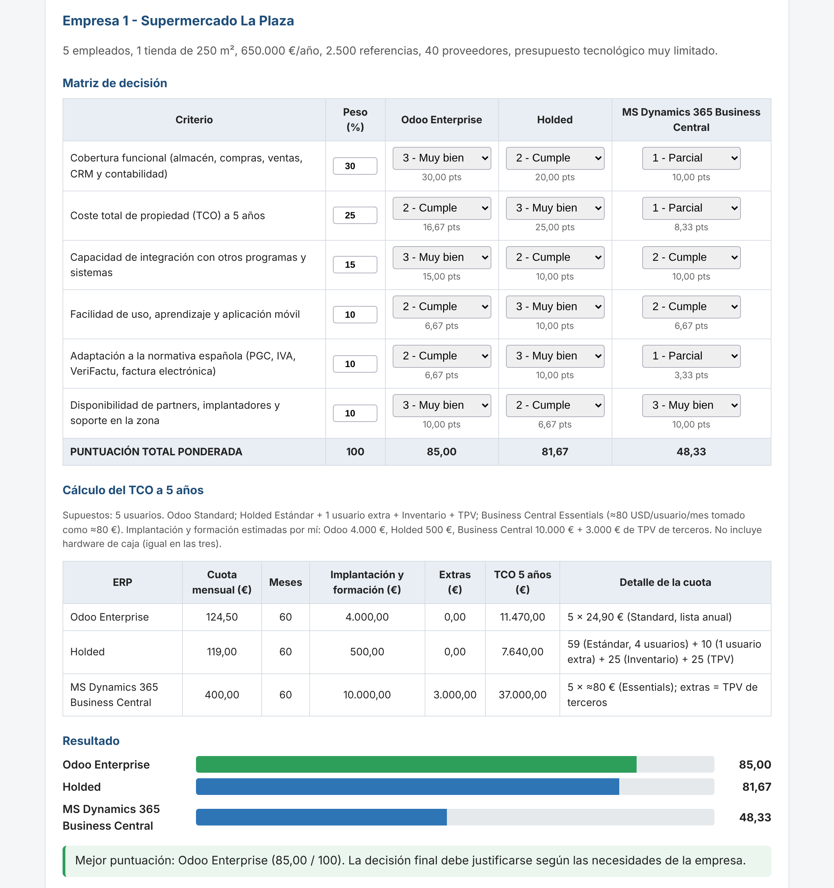
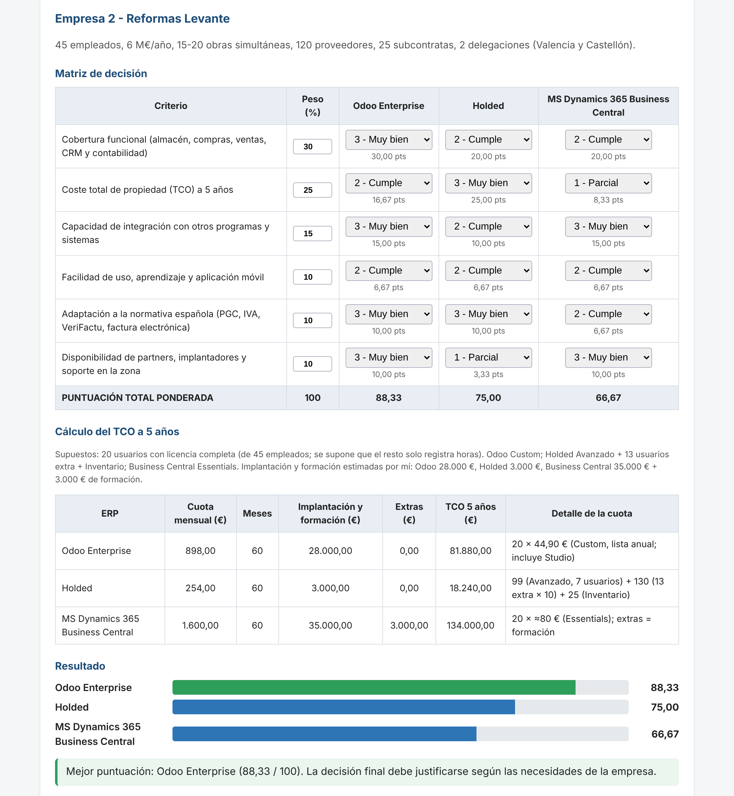

Para la actividad hice una matriz en HTML y JavaScript con los criterios y pesos del enunciado, una por cada empresa. Se pueden cambiar las notas y los pesos y el total se calcula solo con (valoración × peso) / 3. Comparé Odoo Enterprise, Holded y Business Central. Para poner las notas busqué precios y funciones en las webs de cada ERP, y calculé el coste a 5 años como cuota × 60 meses + implantación.
| Empresa | Odoo | Holded | Business Central | Elegido |
|---|---|---|---|---|
| Supermercado La Plaza | 85,00 | 81,67 | 48,33 | Odoo |
| Reformas Levante | 88,33 | 75,00 | 66,67 | Odoo |
Un supermercado con 2.500 productos necesita controlar el stock y las caducidades, y Odoo lo trae de serie. Además tiene TPV, compras y facturación en el mismo programa. Cuesta unos 11.470 € en 5 años, más que Holded (7.640 €), pero la diferencia no es mucha. Descarté Business Central porque salía por unos 37.000 €, que es demasiado para 5 usuarios.
La empresa lleva 15-20 obras a la vez con Excel y correos, así que necesita tener en un solo sitio el CRM, las compras, las horas y los costes de cada obra. Odoo lo hace con cuentas analíticas y partes de horas, y tiene partners en Valencia. Sale por unos 81.880 € en 5 años. Business Central también valdría, pero cuesta bastante más (unos 134.000 €), y Holded se queda corto para controlar los costes por obra.
El coste de implantación y formación lo estimé yo, no son precios oficiales. Los precios de Odoo los saqué de oec.sh porque odoo.com no me dejaba leerlo, y el de Business Central estaba en dólares y lo tomé como euros. He usado una IA (Claude) para buscar y resumir información, y los datos de los enlaces de arriba los comprobé en las propias páginas.

